InkStudio puts a Procreate-like layer on top of Illustrator. Everything you draw stays ordinary Illustrator artwork: vector paths with Illustrator brushes, editable afterwards with any Illustrator tool.
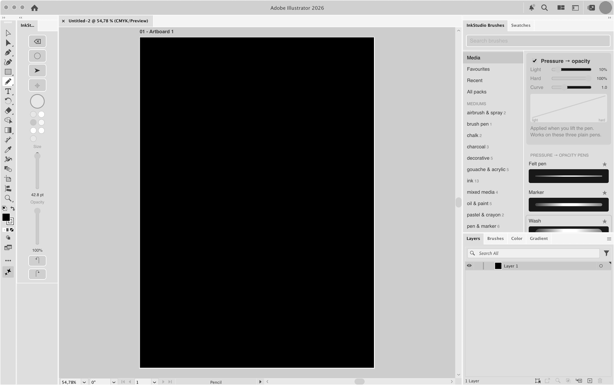
Choose Window > Workspace > InkStudio to get this layout. If a panel is missing, open it from Window > Extensions > InkStudio Brushes or InkStudio Rail. Everything else in Illustrator stays in its menus and panels.
Illustrator's own drawing tools do the drawing: the Paintbrush (B) for brushes with pressure, the Pencil (N) for textured brushes drawn live. InkStudio never switches to the Paintbrush by script, because that crashes Illustrator 2026; press B yourself.
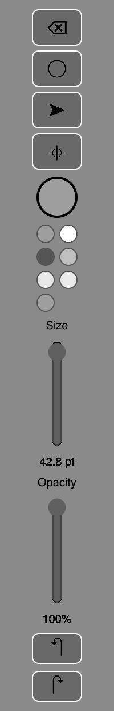
The rail holds what you touch while drawing: four tools, colour, size, opacity, undo and redo.
| Icon | Name and use |
|---|---|
| Eraser. Erases parts of paths; drag across a stroke to cut it. | |
| Shape. Shaper tool: scribble a rough rectangle, circle or line and Illustrator turns it into a clean shape. | |
| Select (V). Select and move strokes. Selected strokes take the next brush, size, colour and opacity you choose. | |
| Eyedropper (I). Picks colour and style from existing artwork. | |
| Colour. The current stroke colour; click it for the colour picker. | |
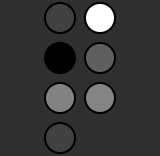 | Recent colours. Colours you used lately; click one to draw with it again. |
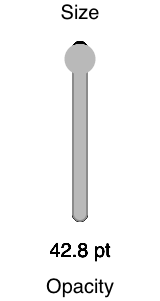 | Size and opacity. Drag the upper fader for stroke weight in points, the lower one for opacity. Both apply to selected strokes and to the next ones. |
| Undo. One step back. | |
| Redo. One step forward. |
Illustrator has no default opacity for new strokes, so the rail stamps its opacity on every new stroke a moment after you draw it.
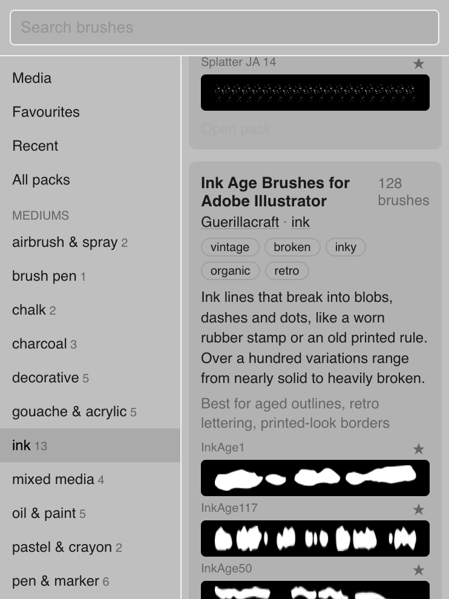
InkStudio Brushes lists every brush you own, with Illustrator-style previews. The column on the left chooses what you see; the right side shows the brushes.
Media shows ready-made drawing tools (next chapter). Favourites shows the brushes you starred. Recent shows what you used last. All packs lists every pack.
Under Mediums the brushes are grouped by what they imitate: airbrush and spray, brush pen, chalk, charcoal, decorative, gouache and acrylic, ink, mixed media, oil and paint, pastel and crayon, pen and marker, pencil, print and engraving, splatter, technical, texture and grain, watercolour. The number after each is how many packs it holds. Makers groups packs by the person or studio who made them, and Packs lists each pack by name.
A pack shows its maker, tags and a short introduction with what it is best for, followed by its brushes. Tap a brush to load it: InkStudio opens the pack's Illustrator brush library once, applies the brush to the Paintbrush and to any selected strokes. The star adds it to Favourites. The search field at the top matches pack names, makers, tags and brush names.
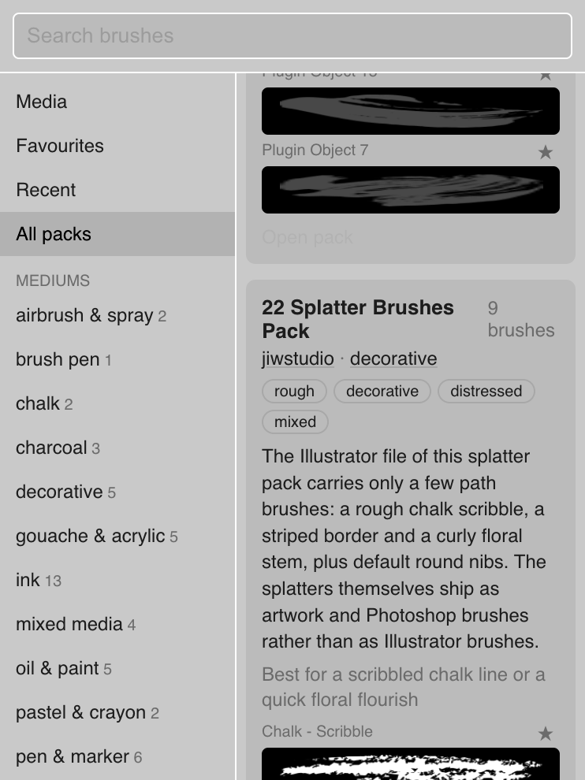
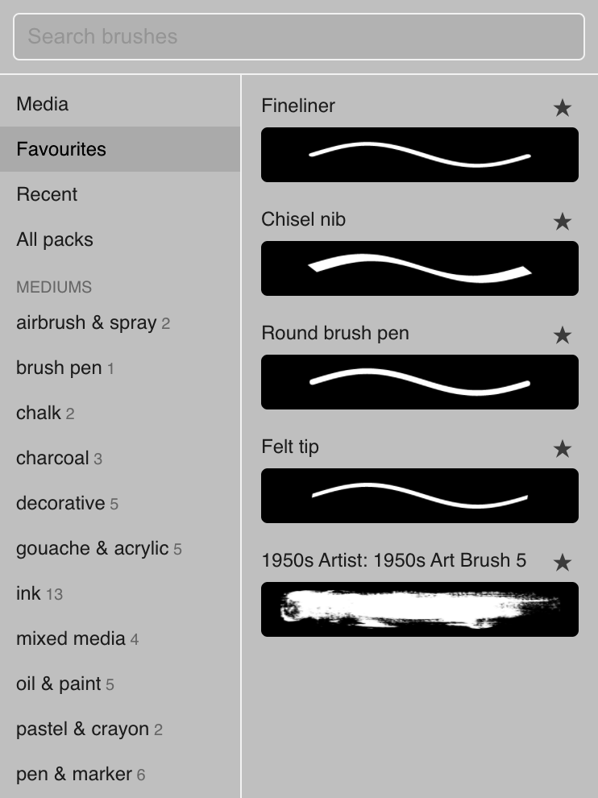
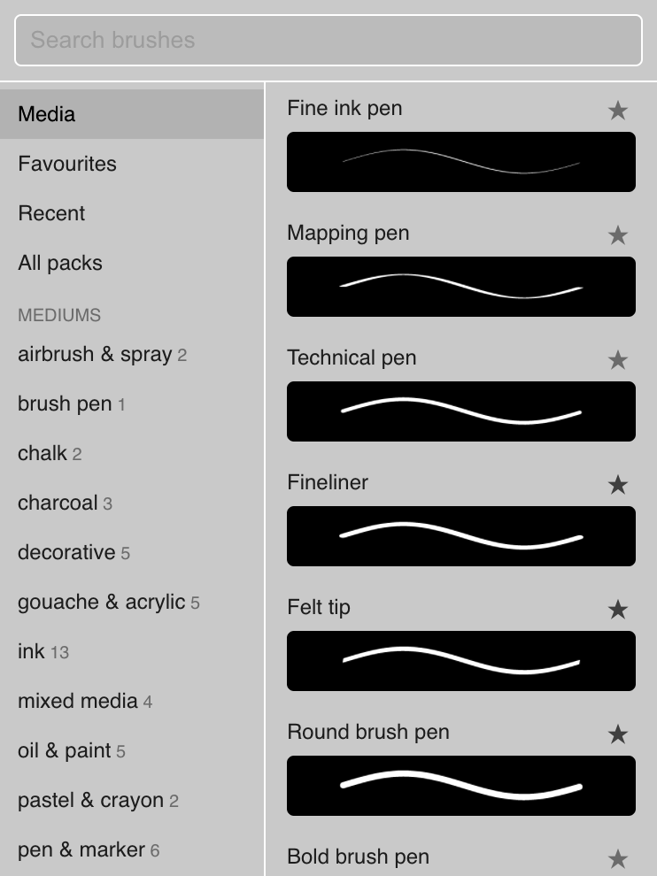
Media turns brushes into tools you recognise from a desk. Each tool sets the brush, size, opacity and blend mode in one tap.
Felt pen, Marker and Wash are plain pens with a pressure width. They work without any pack and can also fade with pressure (next chapter).
Pens whose width follows pen pressure while you draw: fine ink pen, mapping pen, technical pen, fineliner, felt tip, round and bold brush pens, marker nib, thick round, chisel nib and soft round. Below them are Illustrator's bristle brushes in real brush shapes: round, liner, spotter, filbert, flat, bright, angle, fan, cat's tongue, dagger, mop, dome, deerfoot and stippler. The bristle tools use Adobe's own Bristle Brush Library, so they work for everyone. Draw these with the Paintbrush (B).
Pencil (F), soft pencil (9B), coloured pencil, fineliner, brush pen, dry ink, marker, watercolour, watercolour wash, gouache, charcoal, soft pastel and oil pastel. These are art brushes from specific packs that show their texture while you draw with the Pencil tool (N). A tool whose pack is not installed shows "Could not load".
Tools set to Multiply darken where strokes overlap, like ink, marker and watercolour on paper.
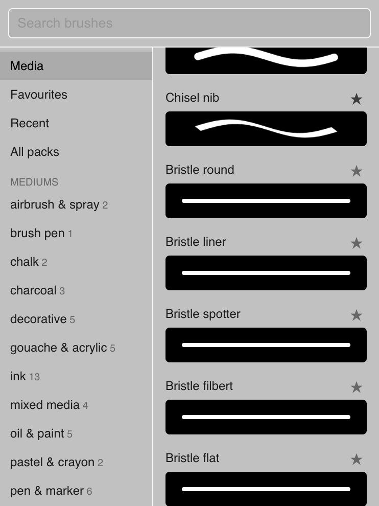
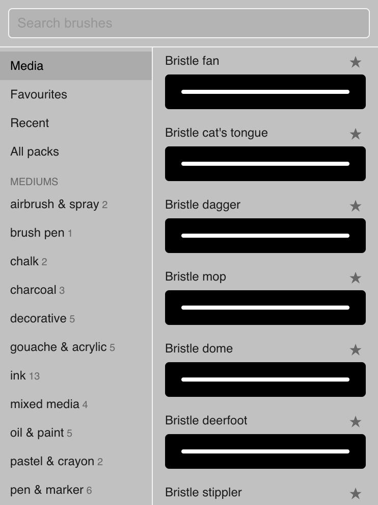
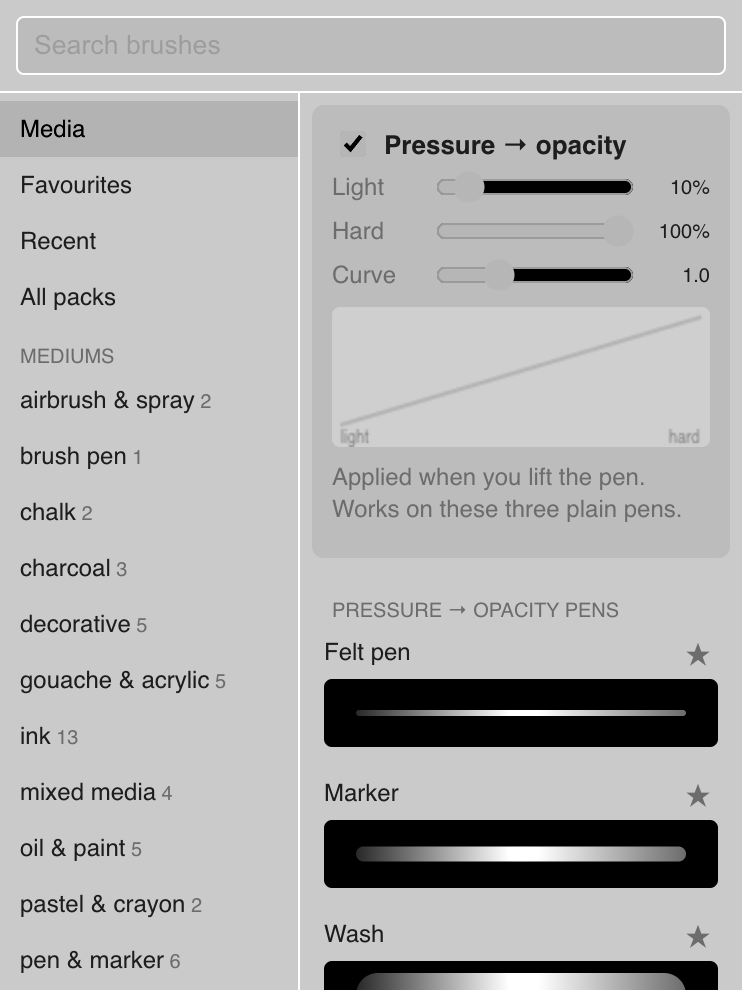
Illustrator can make a stroke wider with pressure, but not lighter. InkStudio adds that for the three plain pens. With PenCast relaying the pen, the relay sends the pressure along each stroke when you lift the pen, and InkStudio turns it into an opacity gradient on that stroke: press lightly and the line fades, press hard and it is solid.
| Control | Effect |
|---|---|
| Pressure to opacity | Switches the effect on or off. |
| Light | Opacity at the lightest pressure. |
| Hard | Opacity at full pressure. |
| Curve | Below 1 the line gets dark early; above 1 you press harder for the same darkness. The graph shows the result. |
The Surface pen reports a narrow pressure range, so InkStudio stretches each stroke's own range over Light to Hard: easing off always shows.
| Kind | What it does and how to use it |
|---|---|
| Art brush | Stretches one piece of artwork along the stroke: ink swipes, pencil lines, paint strokes. Most textured brushes are art brushes. Long strokes stretch the artwork, so draw in strokes about the length of the original mark. |
| Pattern brush | Repeats tiles along the stroke, with corner and end tiles: borders, chains, stitches, torn edges. |
| Scatter brush | Scatters copies of artwork along the stroke: leaves, dots, splatter, grain. |
| Bristle brush | Simulated bristles with transparency: Illustrator's painterly brush. Many overlapping bristle strokes make files heavy; expand or rasterise finished passages if Illustrator slows down. |
| Calligraphic brush | An elliptical nib whose angle, roundness and size can follow pressure, tilt or rotation. |
Width from pressure comes from the brush: art and calligraphic brushes can use a width profile or pressure options, and the live pens in Media already have them. Double-click the Paintbrush tool for its options: Fidelity towards Smooth gives cleaner curves, Keep Selected off stops the next stroke from replacing the last one, and Edit Selected Paths off lets you draw over strokes without changing them.
The stroke weight on the rail scales the brush. For pressure brushes it sets the widest point; the lightest pressure gives the thinnest line the brush allows.
Pencil. Use the Textured pencils with the Pencil tool (N) at small sizes and Multiply. Build tone with several light strokes; vector strokes keep their grain at any zoom.
Ink. Use the live pens with the Paintbrush. Draw long, confident strokes and keep Fidelity towards Smooth. Fineliner and technical pen give even lines; brush pens swell with pressure.
Marker. Felt pen and Marker in Multiply darken where they overlap. Lay light colours first.
Watercolour and gouache. Use the Textured watercolour and gouache tools on their own layers in Multiply; overlapping washes deepen like real pigment. Lower layer opacity for glazes.
Charcoal and pastel. Use the Textured charcoal and pastel tools at larger sizes, with loose overlapping strokes.
Oil and acrylic. Use the bristle tools: flat and filbert for blocks of colour, round and liner for detail, fan for texture.
Keep sketch, line and colour on separate layers, as you would with tracing paper. Lock the sketch layer and lower its opacity while you ink. For a paper look, put a warm off-white rectangle on a locked bottom layer and a paper texture on a top layer set to Multiply.
| Key | Action |
|---|---|
| B | Paintbrush |
| N | Pencil |
| V | Selection |
| Shift + E | Eraser |
| I | Eyedropper |
| Shift + N | Shaper |
| Space | Pan |
| Shift + H | Rotate View |
| Cmd + Z | Undo; with Shift, redo |
| Cmd + + and - | Zoom in and out |
| Cmd + 0 | Fit artboard in window |
| Tab | Hide or show all panels |
| Problem | Cause and fix |
|---|---|
| Tapping a brush does not start drawing | InkStudio loads the brush but does not select the Paintbrush. Press B (or N for Textured tools). |
| A new stroke replaces the last one | Keep Selected or Edit Selected Paths is on in Paintbrush options. Switch both off. |
| Could not load | The tool's brush pack is not installed or was moved. Re-index your library. |
| Strokes are not fading with pressure | Pressure to opacity works only on the three plain pens and needs PenCast running. |
| Illustrator gets slow | Many bristle or scatter strokes. Expand or rasterise finished passages, or split the drawing into layers and hide the ones you are not working on. |
| Panels are missing | Window > Extensions, or Window > Workspace > Reset InkStudio. |